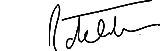

Dear Colleague,
It is our great pleasure to invite you to join us for the evening lecture, entitled "PNH: hidden clinical threats, visible therapeutic outcomes".
As within any disease that we are managing, it is quite challenging to stay up to date with the latest scientific developments, but even more so in the case of a very rare disease, such as PNH.
The evening lecture will focus specifically on:
- The hidden threats of PNH such as thrombosis, chronic kidney failure and pulmonary hypertension
- The value of comprehensive clinical assessment of all patients that are in PNH high-risk groups
- Best practices in terms of clinical assessment and management of the PNH patient
This evening lecture offers a rare opportunity to seek guidance from distinguished experts in the field of rare haematological diseases, together with opportunities for live interaction with the panel.
We look forward to seeing you in San Francisco, and welcoming you to this exciting evening lecture.
Yours sincerely,

Anita Hill, MD, PhD, and Régis Peffault de Latour, MD, PhD
References:
1. Lee JW, Jang JH, Kim JS, et al. Int J Hematol. 2013;97:749-757.
2. Rachidi S, Musallam KM, Taher AT. Eur J Intern Med. 2010;21:260-267.
3. Hill A, Kelly R, Hillmen P. Blood. 2013;121(25):4985-4996.
4. Hill A, Sapsford, RJ, Scally A, et al. Br J Haematol. 2012;158:409-14.
5. Kelly RJ, Hill A, Arnold LM, et al. Blood. 2011;117:6786-6792.
6. Hillmen P, Muus P, Röth A, et al. Br J Haematol. 2013;162:62-73.
7. Hill A, Rother RP, Wang X, et al. Br J Haematol. 2010;149:414-425.
8. Brodsky RA, Young NS, Antonioli E, et al. Blood. 2008;111:1840-1847.